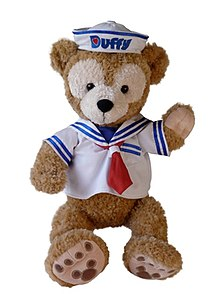
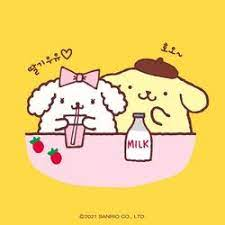

Based on the pair's increasing popular Imagineers decided to develop an entire collection of characters, each with a distinct personality and talent.
Pompompurin is golden retriever dog character first introduced in 1996 According to official character profiles Purin was born on April 16 and his his friends include:
Drinks